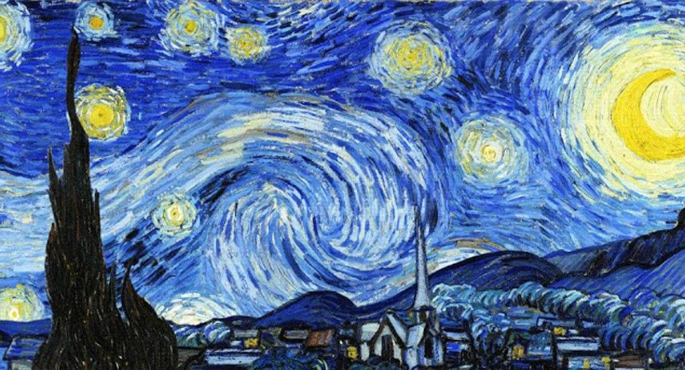
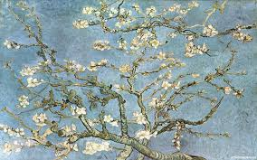
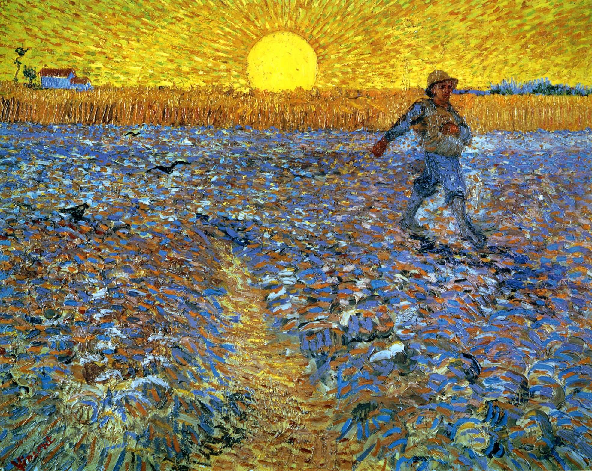

1 / 5

2 / 5

3 / 5

4 / 5

5 / 5

Vincent Van Gogh nació el 30 de marzo del año 1853 en Holanda. Era el hijo mayor de un sacerdote de quien heredó la vocación religiosa, su familia no tenía demasiado dinero.
En 1863 entró en el colegio de Zerenbergen, pero tuvo que abandonarlo por la situación económica de sus padres.
A los 16 años empezó a trabajar como empleado en la Galería de Arte Goupil de La Haya, que estaba siendo dirigida por su tío. Allí comienza su afición por la pintura y la literatura.
La galería se trasladó a Londres y Vincent decidió mudarse a una pensión. Allí llevó una vida tranquila y comenzó a dibujar, pero después de ser rechazado por la mujer de la que estaba enamorado, se volvió violento y huraño y se trasladó a París.
En esos momentos tan deprimentes de su vida vio la religión como su único camino y decidió hacerse sacerdote, pero no fue admitido en el seminario. Al fin se hizo predicador, nombrado por el consistorio de Bruselas, y fue destinado a Borinage. Allí convivió con unos mineros, pero después de apoyar una de sus huelgas le retiraron de la vida religiosa y él decidió dedicarse enteramente a la pintura y a la lectura.
Trabajó como profesor, predicador y vendedor de libros, hasta darse cuenta de que el dibujo era su verdadera pasión. Gracias a su hermano Theo entró a los 27 años en la Academia de pintura de Bruselas. En un viaje a La Haya en 1881 empieza a relacionarse con los círculos de artistas del lugar y decide interesarse por la naturaleza muerta.
Aunque siguió dibujando no conseguía vender sus dibujos ni sus cuadros y empezó a recibir dinero de su hermano Theo, con quien se escribió cartas durante toda su vida para informarle de su situación.
Vincent empezó a tener alucinaciones y a padecer dolores muy graves, así que su hermano decidió ingresarlo en el Hospital de Saint Paul, donde le rechazaron. El Hospital de Saint Reney lo acogió y le diagnosticaron epilepsia y esquizofrenia.
Aún con su enfermedad, Vincent siguió pintando y dibujando sin parar, aunque sus obras continuaron sin tener éxito y sin darle dinero. Tan sólo vendió dos cuadros en su vida.
El 29 de julio del año 1890 Vincent murió en Francia.
Su éxito nació muchos años más tarde, cuando sus cuadros interesaron a la crítica europea. Sus cuadros más famosos son: “La habitación de Arles”, “La noche estrellada”, “Los girasoles” y “Autorretrato”.